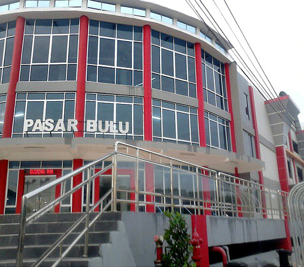
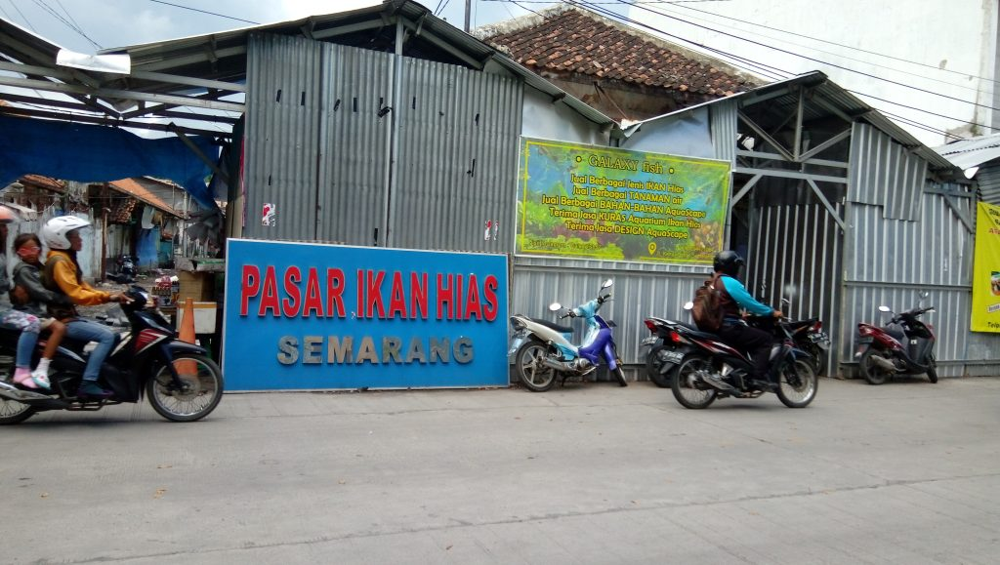

Pasar Johar Semarang
Pasar Johar semarang merupakan salah satu bangunan lama di Kota Semarang yang mungkin bisa dikunjungi wisata belanja di Kota Semarang,karena pasar ini sudah ada sejak lama dan letak nya tidak teralu jauh dengan pusat kota serta akses menuju ke pasar tersebut relatif mudah. Pasar ini dahulunya tidak seperti ini,semenjak terbakarnya pasar ini akhirnya pemerintah memutuskan untuk merenovasi ulang pasar tersebut sehingga tampak seperti sekarang. Walaupun bangunan baru tetapi terlihat model lama.Tentang Pasar Johar
Alamat : Jalan. K.H. Agus Salim, Kauman, Kec. Semarang Tengah, Kota Semarang, Jawa Tengah 50188 Luas Masjid : 6.680 M2 Tiket Masuk : - Buka : 06.00 - 16.00 (wib) Di Dirikan : sudah ada sejak 1936 tetapi di selesai di renovasi 2022 Tentang : Pasar Johar merupakan salah satu bangunan cagar budaya dan denyut nadi perekonomian masyarakat di Kota Semarang, Jawa Tengah. Pasar Johar dibangun pada 1930-an oleh arsitek Belanda Herman Thomas Karsten. Pasar ini mengalami kerusakan setelah kebakaran pada 2015. Kemudian pemerintah Kota Semarang memutuskan untuk merenovasi ulang semua bangunan. Untuk pembangunan tersebut telah dianggarkan sebesar Rp 105.913.294.750 dengan pembangunan seluas 6.680 M2 dan ditargetkan akan selesai pada bulan febuari tahun 2022. Pasar ini terdiri dari 126 kios, 542 los kering dan 36 los basah yang dapat menampung 704 pedagang.
 Pasar Bulu Semarang
Pasar Bulu semarang termasuk pasar yang sudah ada sejak dahulu. Pasar ini memiliki luas 8.451 M2 dan itu belum termasuk pedagang yang jualan di pinggir jalan pasar bulu. Apabila Anda ingin mengunjungi pasar ini di pagi hari sebaiknya menggunakan kendaraan bermotor saja,tetapi bila adanya mobil mungkin bisa parkir melalui pintu yang dari tugumuda. Di lantai atas pasar ini kita dapat melihat pemandangan sekitar pasar yang dimana di depan nya persis ada monumen tugumuda serta bangunan lawang sewu.Tentang Pasar Bulu Semarang
Alamat : Jalan. Mgr Sugiyopranoto, Barusari, Kec. Semarang Sel., Kota Semarang, Jawa Tengah 50245 Luas Masjid : 8.451 M2 Tiket Masuk : Rp 2.000 untuk kendaraan beroda dua,Rp 3.000 untuk kendaraan beroda empat Buka : 24 jam Di Dirikan : Didirkan pada tahun 1902 dan selesai di renovasi ulang 29 Desember 2014 Tentang : Pasar bulu merupakan pasar salah satu pasar tertua selain pasar bulu yang sudah ada sejak 1902. Untuk sekarang pasar bulu memiliki lingkungan yang lebih bersih dibandingkan sebelum di renovasi. Untuk kapasitasnya pasar bulu memiliki 142 jios,380 los,219 pancaan,jadi kalau ditotal sekitar ada 741 orang yang berjualan di pasar bulu. Setiap pagi pasar ini selalu ramai dikunjungi,apabila kita memiliki kemampuan untuk tawar menawar dengan pedangang harga maka kita bisa mendapatkan harga barang yang lumayan terjangkau di banding kita harus membeli di pasar modern.
 Pasar Ikan Hias Semarang
Pasar ikan hia semarang merupakan pasr yang menjual belikan ikan baik yang berasal dari air tawar maupun air laut. Selain menjual belikan ikan di pasr ini juga menjual berbagai macam pernak pernik perkolam ikanan,mulai dari pompa oksigen sampai hiasan nya. Untuk harga mungkin relative hal ini bergantung skill tawar menawar anda,artinya disini setiap antar pedagang harganya bervariatif.Tentang Pasar Ikan Semarang
Alamat : Jalan. K.H. Agus Salim No.22-23, Purwodinatan, Kec. Semarang Tengah, Kota Semarang, Jawa Tengah 50137 Tiket Masuk : Rp 2.000 untuk parkir kendaraan roda dua,Rp 5.000 untuk kendaraan roda empat buka : 07.00 - 17.00 (wib) Di Dirikan : Didirikan pertama kali pada 1901.